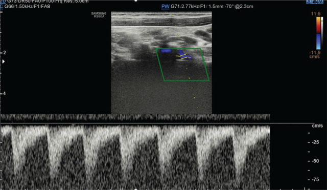

Ficha del catálogo
Síndrome de robo de la subclavia
- Sistema
- Cardiovascular
- Modalidad
- US
- Región
- Cuello y miembro superior
- Dificultad
- Intermedio
Se produce cuando una estenosis u oclusión de la arteria subclavia proximal al origen de la vertebral invierte el flujo de esta última para irrigar el brazo, con lo que se sustrae sangre de la circulación posterior del encéfalo. Es más frecuente en el lado izquierdo y su causa habitual es la aterosclerosis. Muchos pacientes permanecen asintomáticos y otros refieren claudicación del brazo o mareo con el ejercicio de la extremidad.
Técnica
El ultrasonido Doppler de troncos supraaórticos es la exploración inicial y debe acompañarse de la medición de la presión arterial en ambos brazos. Se interroga la arteria vertebral en su segmento cervical registrando la dirección del flujo y se completa con la maniobra de hiperemia reactiva del brazo. La angiotomografía o la angiorresonancia confirman la lesión de la subclavia y definen su extensión.
Qué observar
- Dirección del flujo en la arteria vertebral respecto a la arteria carótida común
- Morfología de la onda vertebral con muescas sistólicas o inversión completa
- Diferencia de presión sistólica entre ambos brazos
- Onda amortiguada en la arteria braquial y axilar del lado afectado
- Cambios tras la maniobra de hiperemia con manguito en el brazo
- Estado de la bifurcación carotídea y de la vertebral contralateral
Hallazgos
En las formas incompletas la onda vertebral conserva sentido anterógrado pero muestra una muesca mesosistólica profunda que refleja el retraso de la llegada de sangre. En el robo establecido el flujo vertebral es completamente retrógrado durante todo el ciclo. La arteria braquial del lado afectado presenta una onda amortiguada con ascenso lento y la presión sistólica es claramente menor que en el brazo contralateral.
Perlas
Una diferencia significativa de presión sistólica entre ambos brazos es el dato más simple y más rentable para sospechar el cuadro, y su comprobación debe formar parte de cualquier estudio Doppler de troncos supraaórticos, sobre todo cuando la onda vertebral muestra muescas sistólicas sin inversión franca.
Diagnóstico diferencial
- Hipoplasia de la arteria vertebral
- El calibre es pequeño de forma difusa con flujo anterógrado de baja amplitud y sin diferencia de presión braquial.
- Aortitis de grandes vasos
- Hay engrosamiento parietal concéntrico y afectación multisegmentaria en pacientes jóvenes con marcadores inflamatorios.
- Compresión de la salida torácica
- Los cambios de flujo dependen de la posición del brazo y desaparecen en reposo.
- Robo tras derivación con la arteria mamaria interna
- Aparece angina con el ejercicio del brazo en un paciente con revascularización coronaria previa.
Simuladores
- Inversión aparente por una corrección de ángulo mal colocada en el equipo
- Confusión entre arteria y vena vertebral en el registro espectral
- Onda vertebral amortiguada por estenosis distal intracraneal
Por modalidad
- US
- Muestra la dirección del flujo vertebral y su respuesta a la hiperemia, con equipo accesible y sin contraste.
- TC
- Localiza y cuantifica la estenosis de la subclavia y valora el arco aórtico y sus ramas.
Protocolo
Doppler de troncos supraaórticos con registro de la vertebral en el segmento entre apófisis transversas, comparando siempre la dirección del flujo con la de la carótida común adyacente. Se realiza la maniobra de hiperemia inflando un manguito en el brazo durante unos minutos y registrando la vertebral al liberarlo. Se documenta la presión arterial en ambos brazos.
Clasificación
Se describen grados de gravedad crecientes según el registro vertebral. El primero corresponde a una muesca sistólica en una onda anterógrada, el segundo a un patrón alternante con componente retrógrado en sístole y anterógrado en diástole y el tercero a la inversión completa del flujo durante todo el ciclo cardiaco.
Errores frecuentes
- No comparar la dirección del flujo vertebral con la carótida en la misma imagen
- Omitir la medición de presión en ambos brazos
- Interpretar una muesca sistólica aislada como estudio normal

arteria subclavia arteria vertebral flujo retrógrado Doppler troncos supraaórticos claudicación del brazo aterosclerosis